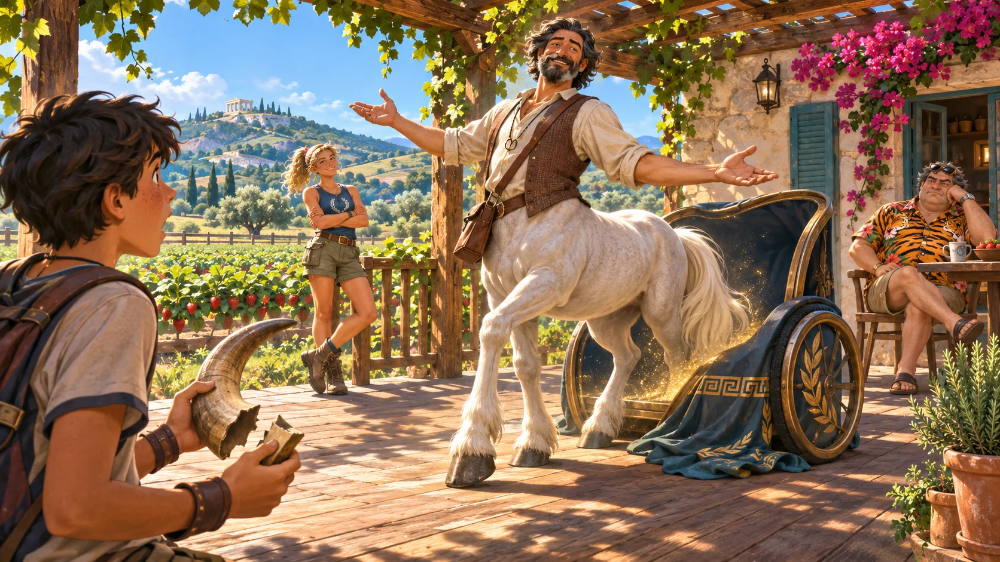
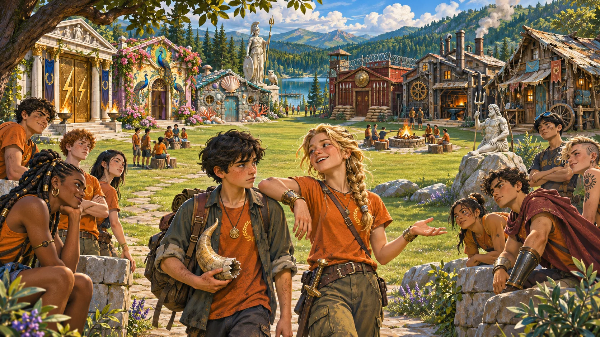
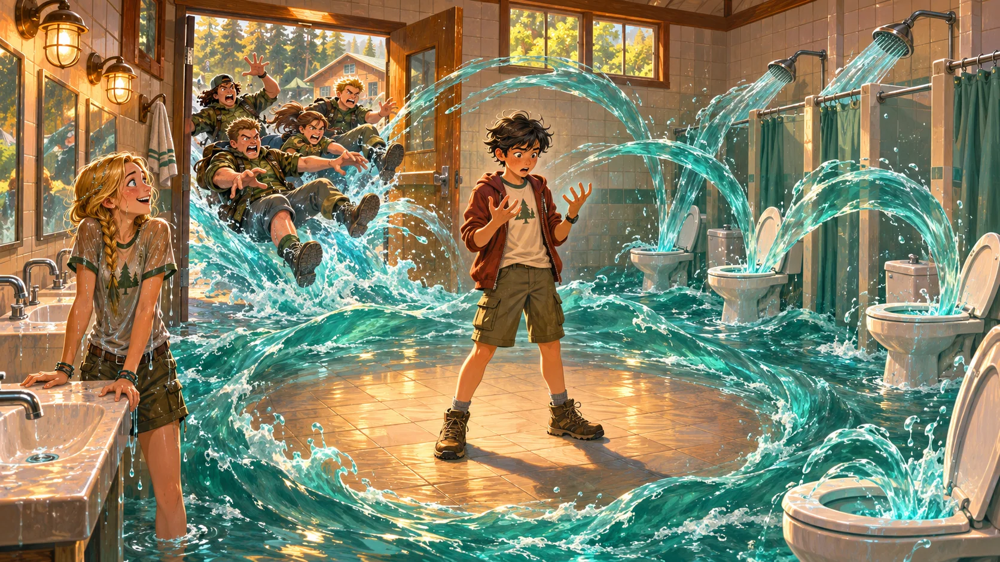

Half-Blood Camp Files
Percy has survived the Minotaur—but the camp creates more questions than answers. Decode the language, identify the gods, investigate the evidence and discover what the water knows.
⏱ About 30 minutes
Restore the timeline
3 minutesClick the six events in the order they happen across Chapters 5 and 6.

Decode the expressions
8 minutesChoose the expression that matches each sentence. In the vocabulary, mythology and grammar files, only your first answer earns a point; feedback appears after every choice.
Who am I?
4 minutesIdentify each figure or object from the clues.
Evidence about the past
5 minutesUse these forms when evidence helps you make a deduction about the past. A deduction is not proof.
Percy must have felt confused. Annabeth might have expected a great hero. Percy can’t have understood everything immediately.
Defend your opinion
6 minutesTeacher mode: discuss each question for at least 30 seconds. The teacher confirms a point after a complete answer with because.

What does the evidence suggest?
4 minutesGive three spoken deductions. Use one different grammar form in each answer.
New Camper
Clear this case’s progress and start again?